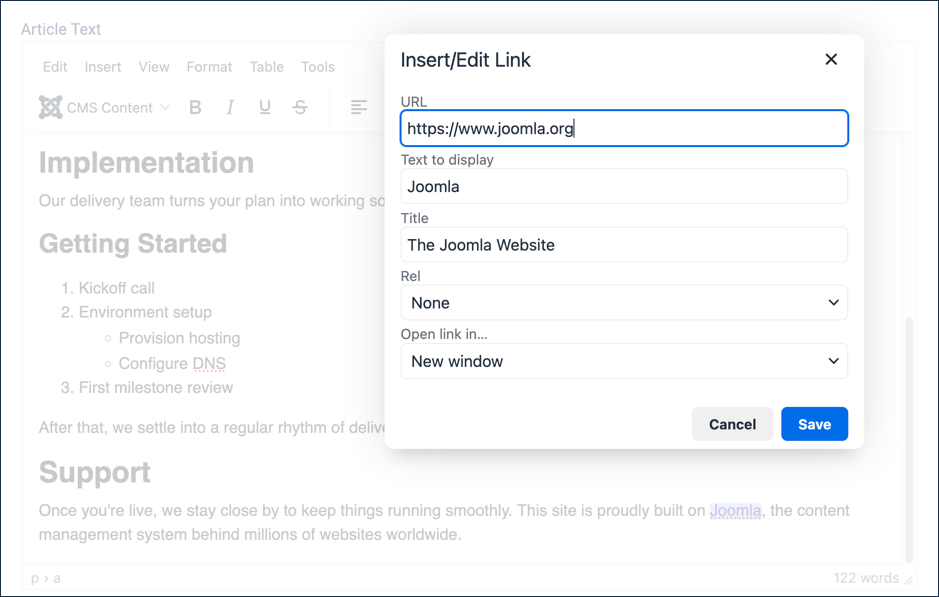
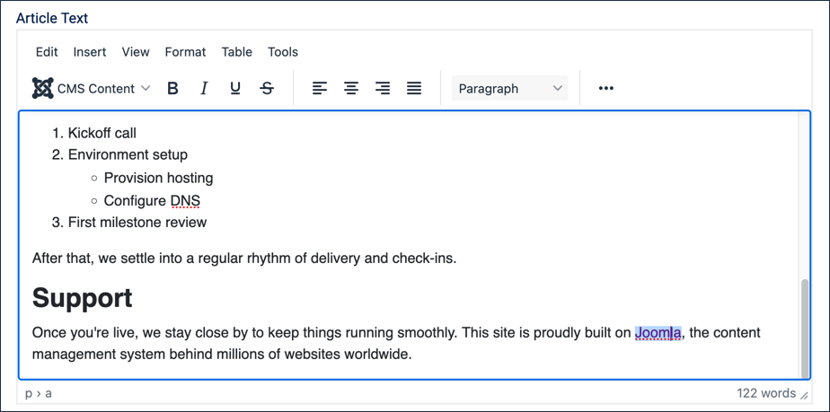
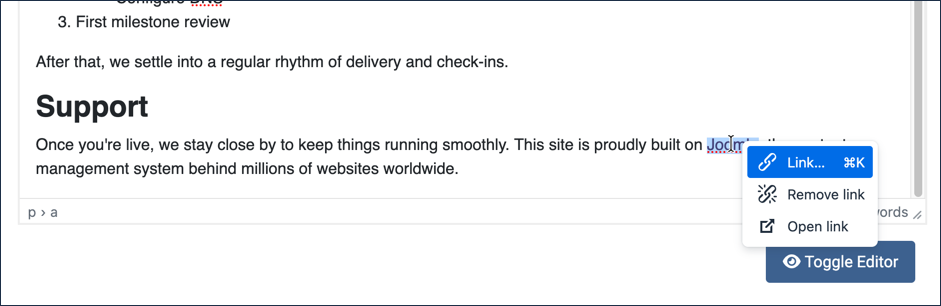

3.3 Lists creates the Our Services article's What's Included and Getting Started lists this tutorial builds on.
Steps
Log in to Joomla backend and navigate to the Home Dashboard.
In the Administrator Menu, click Content > Articles.
Click Our Services to reopen it for editing.
Click and drag the Resize handle in the bottom-right corner of the text area downward, to display more of the article as you work.
Click the Fullscreen icon in the toolbar (four small arrows pointing to the corners) to expand the editor to fill the browser window — or press ⌘⇧F. Click it again, or press the same shortcut, to return to normal size.
Click at the end of the Support paragraph, then type a new sentence: This site is proudly built on Joomla, the content management system behind millions of websites worldwide.
Select the word Joomla within the sentence you just typed. Result: The popup toolbar appears.
Click the link icon in the popup toolbar. Result: The hyperlink editing form appears.
Enter the URL https://www.joomla.org.
The Text to display field is already filled in with Joomla, since that's what you had selected. You may override this if desired.
Title:The Joomla Website
Set Open link in... to New window. Note: joomla.org, like many external sites, won't display itself inside a frame — and Joomla's own Preview button opens your article inside one. Without this setting, clicking the link from Preview will fail with a browser error; opening it in a new window avoids the problem entirely.

The Insert/Edit Link form, filled in and ready to save
Click to save the form. Result:Joomla now appears as a hyperlink in the text.

Joomla now appears as a link in the Support paragraph
Click the Save button (do not close the article yet), then click the Preview button after the page refreshes. Result: A frame pops up displaying your article.
Scroll down to the Support section and try out the link. Result: Joomla's site opens in a new tab, thanks to the Open link in... setting from the previous step.
Close the frame to return to your article.
Editing, Removing, or Testing a Link
In the text editor, right-click the Joomla link. Result: The link is highlighted, and a menu with three options appears:
Link... reopens the Insert/Edit Link form.
Remove link removes the link but leaves the display text.
Open link opens the link in a new tab or window. Use this to test a link while editing.

The right-click menu for editing, removing, or opening the link
Press the Escape key to hide the menu.
Click Save & Close. Result:Our Services now links out to the Joomla project from its Support section.
Concepts
Hyperlinks can take the user to a different page, or open the page in a new tab or window. This can be selected in the Insert/Edit Link form. Opening a link in a new tab or window is sometimes used for supplemental content, such as reference information — and it's also the safer choice for links to sites outside your own, since some external sites refuse to display themselves inside a frame, which is how tools like Joomla's Preview work. Opening in a new window sidesteps that entirely.
This reference on hyperlinks and accessibility explains important considerations for those using assistive technology. Linking a meaningful word like Joomla, rather than generic text like "click here," is part of that — it tells the reader what the link leads to, in and out of context.
Adding a Title (available in the Insert/Edit Link form) will display a small popup message when the user hovers over a link.